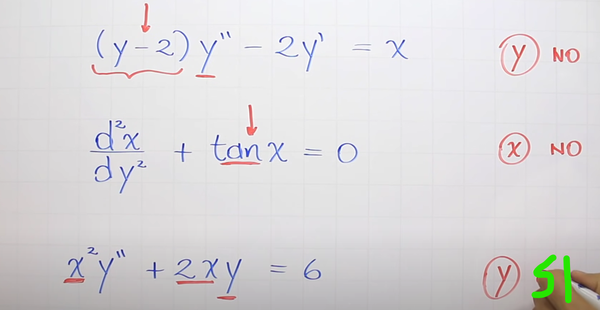
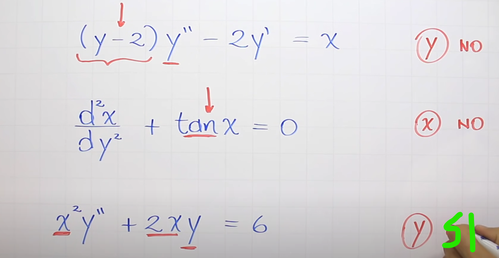
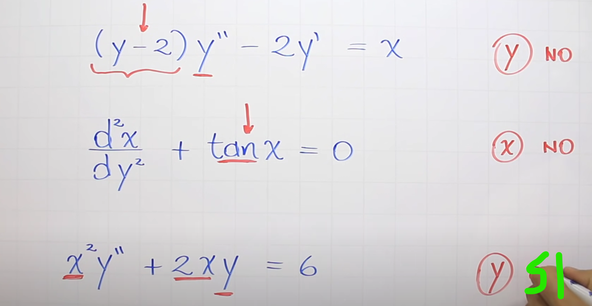

El orden será el orden de la mayor derivada en la ecuación (distinto al grado de la ecuación)
Es el numero que acompaña a la d.
Si aparece (d^2y/dx^2)^5, el orden es el 2
Tipo
EDP
Ecuacion diferencial parcial
EDO
Ecuación diferencial ordinaria.
Diferencia entre EDO y EDP
EDO contiene derivadas ordinarias que dependen de una sola var independiente, mientras que
EDP involucra derivas parciales
Linealidad
una ec diferencial es lineal si sus funciones son lineales.
la var independiente puede realizar cualquier operación, pero la dependiente no puede
multiplicarse con alguan derivada suya, o ser el parametro de una funcion no lineal
la incognita debe ser grado uno, y debe depender de solamentee variables independientes
identificar linealidad
Identificar la variable dependiente: será aquella que tenga derivadas en la ED
Identificar si esta var no argumento de una función no lineal (como un logaritmo o cosas asi)
Una función es lineal si:
La variable dependiente y todas sus derivadas son de primer grado
Los coeficientes de la variable dependiente y sus derivadas dependen de la variable independiente
La variable independiente no está afectada por una operación mayor (es decir: si está en el denominador
o está en una raiz paila)
Ejemplos:

Que es una solución?
Una función es una solución si está definida en un rango en el q la
función es derivable y continua y satisface la ecuación
Verificacion solucion explicita
Coger la función y reemplazarla, lit
Asignarle un dominio en caso de que tenga varias soluciones
Solucion implicita EDO
Se da cuango G(x,y) = 0, pero es lo mismo, reemplazar la función que se
plantea como solución
Diferencia entre una función y solución?
1. La soluciones tienen dominio y son derivables en todo su dominio,
las funciones no necesariamente
2. La función satisface la ecuación diferencial
tipos de soluciones
Existen soluciones implicitas y explicitas
Diferencia entre solución implícita y explicita?
En la explicita la variable dependiente está despejada mientras que
en la implicita no.
Para comprobar una solución implicita se deriva implicitamente asi:
Que es la curva solución?
La grafica de la función sobre un intervalo
Soluciones particulares que son?
Solución que no tenga constantes (solo tiene una solución)
 
